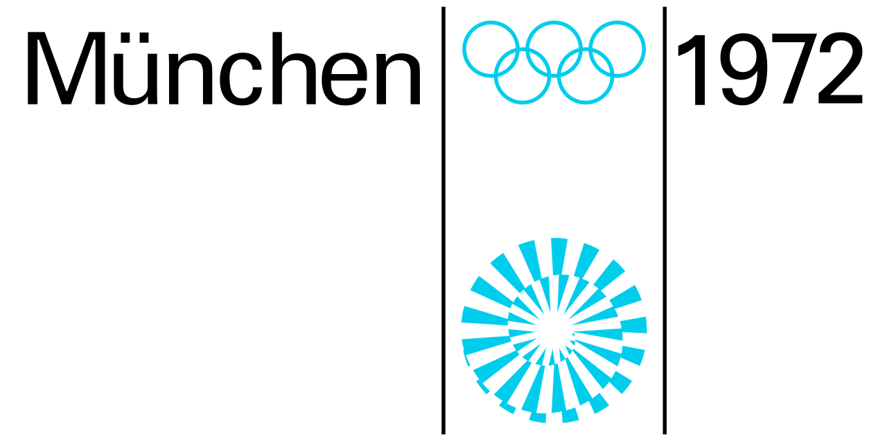

홈 > 브랜드 매거진 > Munich 1972
Munich 1972
1972년 뮌헨 하계올림픽은 오틀 아이허가 시각 디자인을 총괄해 '쾌활한 경기'를 표방한 통합 디자인 프로그램으로, 기하학적 그리드 기반의 픽토그램 체계는 이후 전 세계 안내 표지 디자인에 지대한 영향을 남겼다.
산업 분야 스포츠·아웃도어 · 공개 등급 편집 검수 · 브랜드 평가 4 ★

한눈에 보는 브랜드
1972년 여름 올림픽(제20회 올림픽)은 서독 뮌헨에서 개최되었다. 서독은 이 대회를 통해 1936년 베를린 대회의 권위적·국가주의적 인상에서 벗어나 민주적이고 낙관적인 전후 독일의 이미지를 제시하고자 했으며, 공식 표어는 '쾌활한 경기(Die Heiteren Spiele)'였다.
이러한 지향은 대회 전반의 시각 체계를 관통하는 출발점이 되었다.
브랜드 관점
Munich 1972 항목은 기업 연혁보다 시각 아이덴티티의 완성도를 읽는 데 적합한 자료입니다. Sport 분류 안에서 어떤 브랜드가 로고, 타입, 컬러, 아트 디렉션, 애플리케이션을 하나의 시스템으로 묶는지 보여주며, 산업 정보와 별도로 BI/CI 디자인 레퍼런스 축을 형성합니다.
일부 상세 아이덴티티는 멤버십 잠금 상태로 기록되어 공개 메타데이터 중심으로만 정리됩니다.
브랜드 아이덴티티
1966년 디자인 책임자로 임명된 오틀 아이허(Otl Aicher)는 표지물·사인·출판물·상품·환경 그래픽에 이르는 포괄적 디자인 프로그램을 통합 매뉴얼로 정립했다. 색채 전략은 의도적으로 붉은색·검정·금색을 배제하고 하늘색을 평화를 상징하는 공식 색으로 삼았으며, 녹색·은색 등 바이에른 알프스를 연상시키는 밝고 경쾌한 색군을 채택해 1936년 대회의 인상과 단절을 꾀했다.
문자 체계로는 절제된 Univers를 선정했고, 엄격한 기하학적 모듈 그리드 위에 일정한 선 굵기로 구축한 스포츠·안내 픽토그램 체계는 이 프로그램의 핵심 성과로 평가된다. 광선이 퍼지는 나선형 엠블럼(Strahlenkranz)의 최종안은 공모를 거쳐 코르트 폰 만슈타인의 안이 선정되었으며, 자료에 따라 아이허와의 공동 작업으로 표기되기도 한다.
제품과 서비스
Munich 1972 항목의 제품·서비스 정보는 일반 상품 카탈로그가 아니라 브랜드 아이덴티티 산출물 기준으로 정리됩니다. 전체 에셋 17개, 이미지 17개, 로컬 저장 이미지 17개를 통해 정지 이미지와 영상 에셋의 비중을 확인할 수 있고, 이는 로고 적용, 컬러 시스템, 캠페인 톤, 패키지 또는 공간 적용 가능성을 검토하는 출발점이 됩니다.
사람들
현재 상태
아이허의 픽토그램 체계는 이후 전 세계 공항·역사·교통 시설의 안내 표지와 보편적 픽토그램 디자인에 지속적 영향을 미쳤으며, 단순성·기능성·포용성을 중시한 그의 통합 시각 체계는 이후 올림픽 브랜딩의 기준점으로 남아 있다.
타임라인
BI/CI 변천사
확인된 BI/CI 이미지가 아직 없습니다.
함께 읽을 브랜드
Ve
Veikkausliiga
스포츠·아웃도어 · 편집 검수VeikkausliigaVeikkausliiga는 2025년에 기록된 Sport 계열의 브랜드 아이덴티티 사례입니다. Bond가 아이덴티티 작업의 디자이너로 기록되어 있습니다. 로고, 타입...
Bo
Borussia Dortmund
스포츠·아웃도어 · 편집 검수Borussia DortmundBorussia Dortmund는 2023년에 기록된 Sport 계열의 브랜드 아이덴티티 사례입니다. Design Studio가 아이덴티티 작업의 디자이너로 기록되어...
 스포츠·아웃도어 · 편집 검수Slazenger
스포츠·아웃도어 · 편집 검수SlazengerSlazenger는 2024년에 기록된 Sport 계열의 브랜드 아이덴티티 사례입니다. Venture Three가 아이덴티티 작업의 디자이너로 기록되어 있습니다. 로...
 스포츠·아웃도어 · 자료 기반Munich
스포츠·아웃도어 · 자료 기반Munich무니치(Munich)는 측면 'X' 마크가 상징인 스페인의 스포츠화·스니커즈 브랜드이다.
Ca
Calgary 1988
스포츠·아웃도어 · 편집 검수Calgary 1988Calgary 1988는 1979년에 기록된 Olympic Design 계열의 브랜드 아이덴티티 사례입니다. Gary W. Pampu, Justason & Taven...
Da
Dallas Trinity FC
스포츠·아웃도어 · 편집 검수Dallas Trinity FCDallas Trinity FC는 2024년에 기록된 Sport 계열의 브랜드 아이덴티티 사례입니다. Moniker, ModestWorks가 아이덴티티 작업의 디자이...
Me
Metro Bilbao
스포츠·아웃도어 · 편집 검수Metro Bilbao Metro Bilbao 는 1988년에 기록된 Transport 계열의 브랜드 아이덴티티 사례입니다. Otl Aicher가 아이덴티티 작업의 디자이너로 기록되어 있습...
Ni
Nike Run
스포츠·아웃도어 · 편집 검수Nike RunNike Run는 2025년에 기록된 Sport 계열의 브랜드 아이덴티티 사례입니다. Porto Rocha가 아이덴티티 작업의 디자이너로 기록되어 있습니다. 로고,...